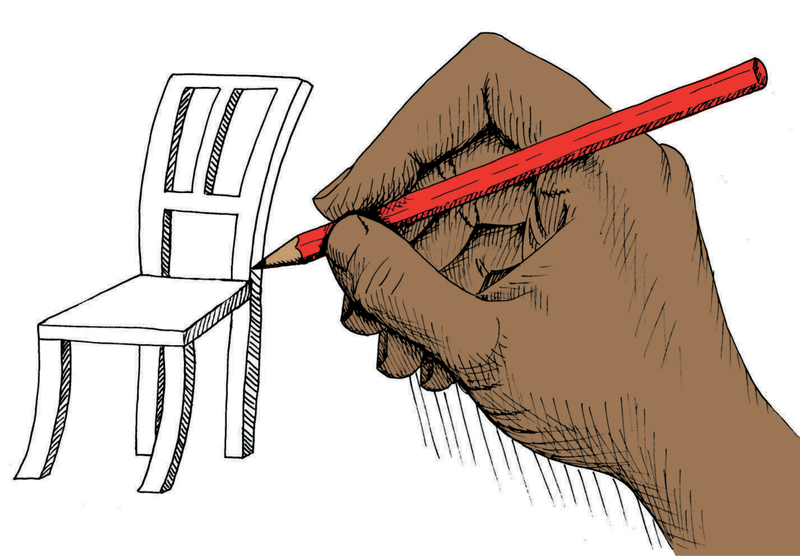
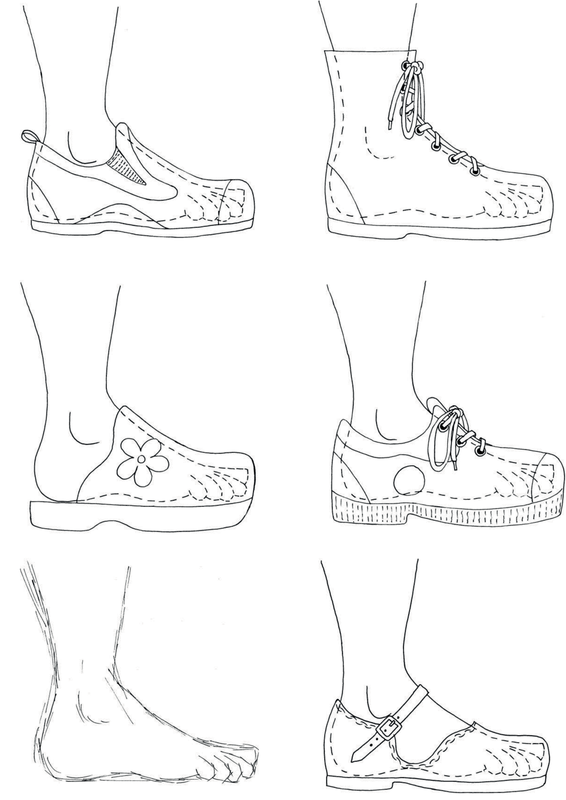

<div class="container">
  <div id="contents" class="col-md-12 main-content"><h1 xmlns="http://www.w3.org/1999/xhtml" id="toc-id-3">How to say things with drawings</h1>
    <p xmlns="http://www.w3.org/1999/xhtml" class="x--Body-opener">Sketching and drawing are very
    important skills in Technology. They allow us to share our
    ideas, designs, and technical solutions with other people. In
    this chapter, you will learn what the main purpose of graphics
    are. You will also learn about the different meanings of thick
    and dark lines, thin and feint lines, and dashed lines. And you
    will learn a little bit about scale and how to show sizes on
    drawings. But the most important thing about sketching and
    drawing is that you need to practise. So in this chapter you
    will learn how to do some simple sketches and how to do a flat
    drawing showing sizes.</p>

    
   
	<figure xmlns="http://www.w3.org/1999/xhtml"><div class="frame-3"></div>
	<figcaption>Figure 1 </figcaption></figure>
  	<figure xmlns="http://www.w3.org/1999/xhtml"><div class="frame-3"></div>
	<figcaption> Figure 2: Drawings in a shoe design studio</figcaption></figure>
  </div>
</div>